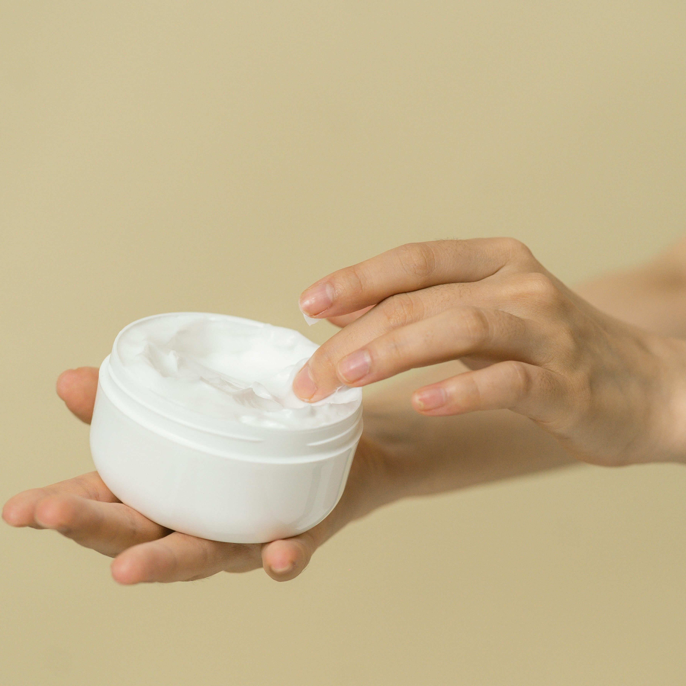

Cleanser
Toner

Moisturiser

With combination skin you may want to separate your skin care into different sections, for example if you experience dryness only on your cheeks then it isn’t necessary to apply it on your forehead and nose if you don’t want to. It may be beneficial to check out the other pages for dry and oily skin to check out some ingredient recommendations as combination skin covers quite a wide range and can be difficult to pinpoint under only a few products.
Combination skin is the most common skin type among teenagers. It is when different areas of your face experience different concerns or symptoms. For example, it is quite common for teenagers to have an oiler T zone (forehead, nose and chin) compared to the rest of their face.
Combination skin generally appears to be:
There is actually no one way to categorise the appearance of this skin type as it is can be a mixture of all of the others.
Niacinamide- Balances skin by regulating sebum production and preventing irritation. It is known for its versatility.
Green tea extract- Its anti-inflammatory properties may aid in acne prevention while simultaneously hydrating the skin.
PHA (Polyhydroxy acids)- This is a gentle chemical exfoliant that refreshes the skin barrier without being too harmful to dry skin. Nevertheless it is best to use if sparingly or only on areas that require it.
Squalene- This is a hydrating oil that mimics the skin’s own sebum production. It is a great hydration ingredient that is your more pressing concern.
It is generally difficult to discern which ingredients are harmful and sometimes even beneficial for combination skin. However it is important to note that fragrances and alcohol based ingredients are generally bad for all skin types.